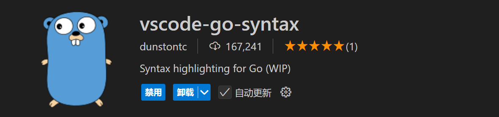

Golang 开发环境搭建
目录
下载 Golang
官网链接：https://golang.google.cn/dl/

配置环境
-
安装好之后须添加如下环境变量：
变更名 变量值 说明 GOPATH E:\gowork Go语言的工作目录，存放自己编写的 .go 文件、项目、包、编译的二进制文件等 GOROOT D:\go Go的安装路径 在 Path 路径下，新增 %GOROOT%\bin
ps: GOPATH 的值，需要根据实际情况按需配置，默认路径为C盘用户目录下
-
开启 go mod 及配置国内代理：
1 2go env -w GO111MODULE=on go env -w GOPROXY=https://goproxy.cn,direct
配置 VSCode
安装 Go、vscode-go-syntax 两插件
届时，VSCode 会弹出需要安装其他 go 扩展的提示，点击 Install All 即可
如条件允许更推荐使用 GoLand 进行开发